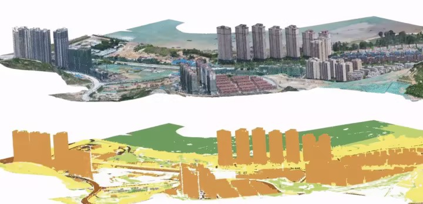

研究课题
Research Topics
具身智能 · 无人机
无人机具身智能
融合具身认知与深度强化学习，实现无人机在复杂动态环境中的自主导航、主动感知与智能操控，推动低空智能体发展。
Embodied AI
RL Navigation
UAV Swarm
- 视觉-语言-动作联合决策模型
- 未知环境探索与实时避障
- 多机协同感知与任务分配

3D视觉 · 空间智能
三维空间理解
结合生成式AI与神经渲染技术（如NeRF/Gaussian Splatting），探索从文本或图像自动生成高质量三维场景。
3D Semantic Seg.
NeRF / 3DGS
Point Cloud
- 大规模点云分割与理解
- 三维重建与场景理解
- 三维场景生成
地理智能 · 城市计算
城市地理分析
整合多模态遥感数据、点云数据，进行建筑功能识别，揭示城市形态演化与可持续发展规律，支撑智慧城市决策与规划。
Urban Computing
Spatial Analytics
GeoAI
- 多源数据融合的建筑功能区识别
- 城市形态演化与可持续发展
- 时空大模型
生态遥感 · 深空探测
生态与深空
面向全球变化与深空探索，利用多源遥感与AI算法监测生态系统碳汇、生物多样性，并开展行星地质与天体遥感分析。
Ecology Remote Sensing
Planetary Science
Deep Space
- 基于卫星影像、点云数据的碳汇估算
- 月球熔岩管多模态遥感解译
- 生态遥感